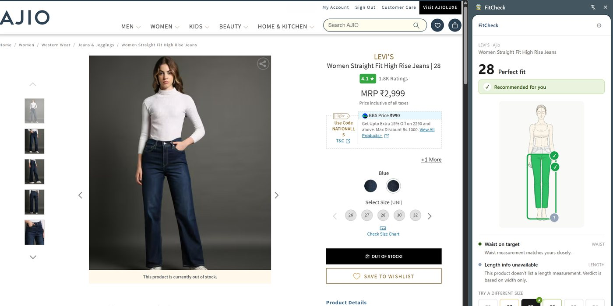
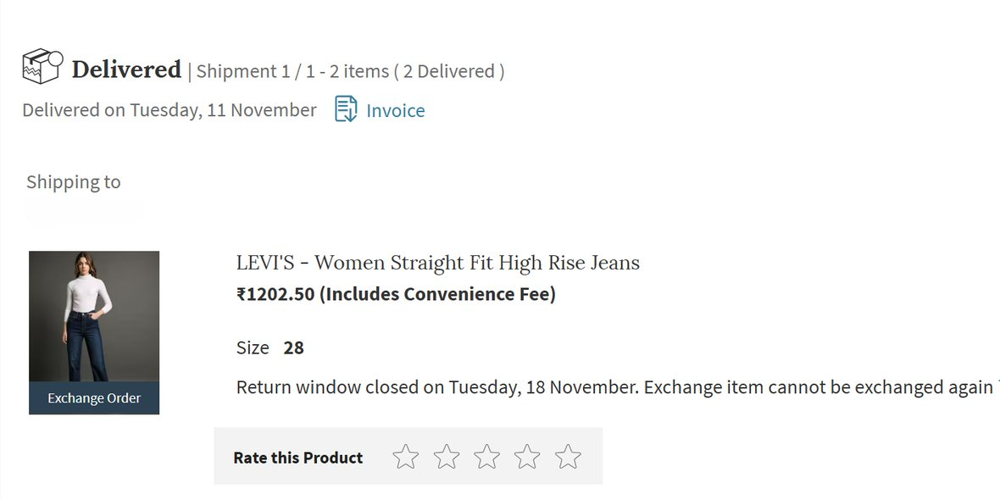
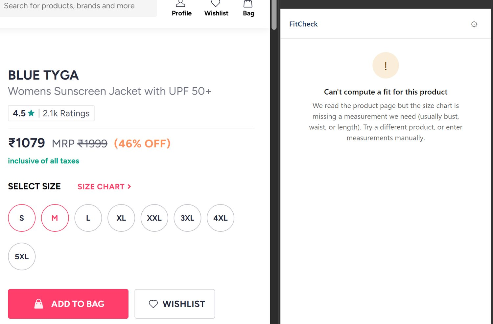

FitCheck
A calculator, not a guess. It reads the size chart already on the page and works out whether the size will actually fit.
Chrome, Edge, Brave or any Chromium browser. The side panel it runs in does not exist in Firefox or Safari.


The label said 30. So did my waist.
I ordered Levi’s jeans in size 30. My waist is 30 inches. They arrived too loose.
I sent them back and exchanged them for a 28. That should not have been possible.
Then I read the size chart on the page I had just bought from. On that cut, a size 28 is made for a 30-inch waist. The label was never a measurement. It was a name.
The chart had been sitting on that page the whole time I was ordering the wrong thing. Three shipments, one out, one back, one out again, for a pair of jeans whose correct size was published two scrolls down.
Not long after, Myntra, AJIO, H&M and Westside were all running sales at once and I had a tab open on each. I shop for clothes on a laptop, because a bigger screen shows me more of what I am about to buy. That preference is the only reason I noticed.
Across four tabs, the same letter meant four different bodies. An M on one site was not the M on another. Myntra and AJIO were worse, because they are aggregators. Every brand inside them ships its own chart.
I am an XS in some places. An S in most. An M in a few. There is no version of me that is one size.
And every one of those pages already had the chart on it. The information was never missing. It just asked me to do arithmetic across four tabs, in my head, while a sale timer ran.
So the chart was never the problem. Trusting it was.
How it works
It reads the chart the shop already published, works out your fit from it, and can build your profile from something you already own.
Non-goals, and why
Seven things, and none of them were turned down for being hard to build. The first one was the original idea for the whole product.
The same page, with FitCheck on it
The jeans from the top of this page, and what the extension says about them now.


What it still cannot tell me
A working engine, one real case where it would have saved a return, and nowhere near enough users to know whether it holds.
